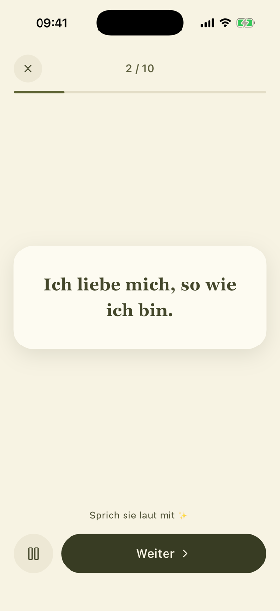
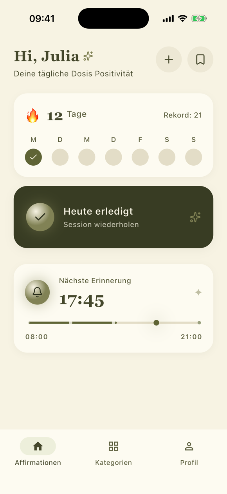
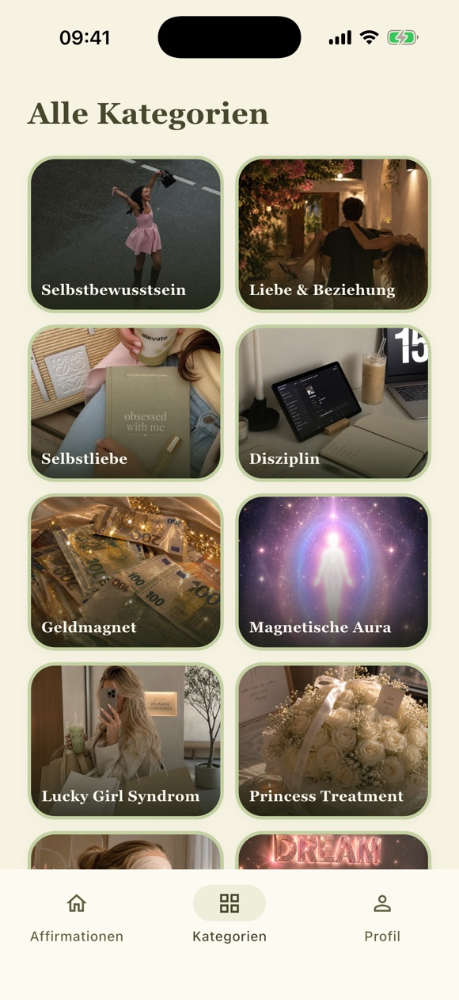

Täglich neu, nie zufällig
Die Auswahl richtet sich nach den Bereichen, die du gewählt hast — und wiederholt sich innerhalb eines Zyklus nicht.

Tägliche Affirmationen, die zu dem passen, was dich gerade beschäftigt — ruhig gestaltet, zum Anhören, ohne Tracking.



Die Auswahl richtet sich nach den Bereichen, die du gewählt hast — und wiederholt sich innerhalb eines Zyklus nicht.
Du legst fest, wie oft und in welchem Zeitfenster Liara sich meldet. Die Erinnerungen plant dein iPhone selbst.
Zu jeder Affirmation gehört eine Aufnahme. Du kannst deine Session also lesen oder einfach hören — nach dem ersten Laden auch offline.
Du erzählst Liara einmal, worum es dir geht: was du erreichen möchtest, welche Themen dich beschäftigen, wie du dich in letzter Zeit gefühlt hast. Daraus stellt die App jeden Tag eine kurze Session zusammen: zehn Sätze, von morgens bis Mitternacht dieselben. Schließt du sie ab, wächst deine Serie — eine ruhige Anzeige deiner Tage, kein Wettbewerb und kein Punktestand. Reißt sie, fängst du einfach wieder an.
Liara fragt auch danach, wie es dir geht. Diese Angaben sind sensibel, und wir behandeln sie so: Ohne Anmeldung bleiben sie ausschließlich auf deinem iPhone. Erst wenn du dich bewusst mit Apple anmeldest, um deine Daten zu sichern, werden sie auf unserem Server gespeichert.
Es gibt keine Analyse-Werkzeuge, keine Werbe-IDs und kein Tracking über andere Apps hinweg. Dein Konto samt aller Daten kannst du jederzeit direkt in der App löschen — Details in der Datenschutzerklärung.
Liara erscheint für iPhone. Fragen vorab beantworten wir gern — wir lesen jede Nachricht selbst.
Zum Support